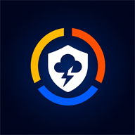

ASN es gratis y va a seguir siéndolo. Pero mantenerlo vivo, mejorarlo y que llegue a más familias lleva tiempo, infraestructura y trabajo. Si podés y querés, tu aporte lo hace posible.
No hay mínimos, planes ni suscripciones. Lo que puedas: cada aporte suma y va entero al proyecto.
Los montos son solo una referencia: el link de pago acepta el importe que vos elijas.
Mercado Pago · próximamente GitHub SponsorsLos pagos se hacen en la página del proveedor. ASN nunca recibe ni guarda datos de tarjetas.
Cada persona que instala ASN, la comparte con su familia y reporta lo que ve, mejora el sistema para los demás. Tu aporte es otra forma de cuidar a otros.
Un sistema moderno, personalizado para cada zona y en manos de la comunidad que lo usa.
Ningún aporte desbloquea alertas ni mejora el pronóstico: todos reciben lo mismo. No hay publicidad, no se venden datos y no se comparte tu ubicación con terceros.
Los aportes son voluntarios y no constituyen una suscripción ni un servicio. Si aportás, guardá el comprobante del proveedor.
← Volver a ASN 4.0